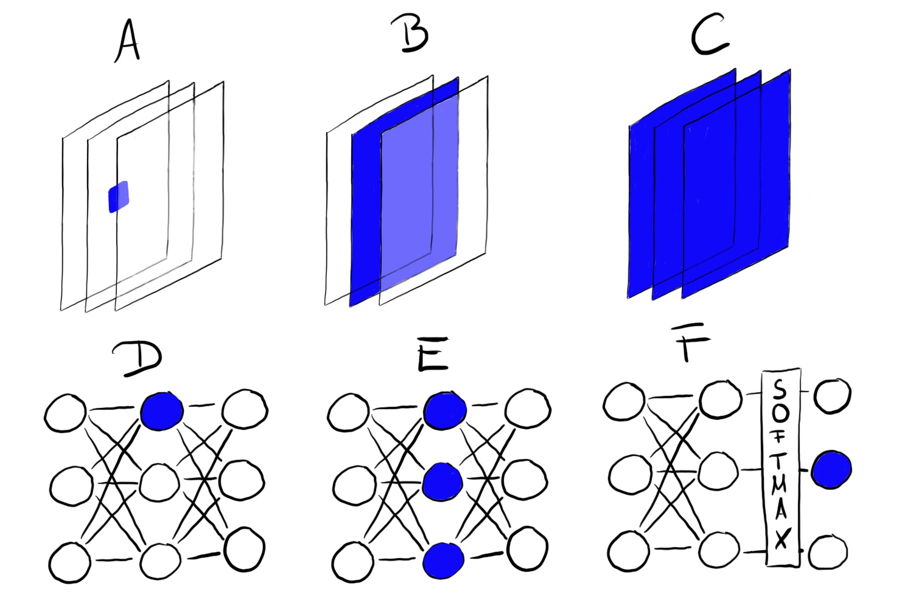
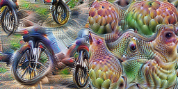
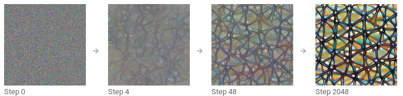
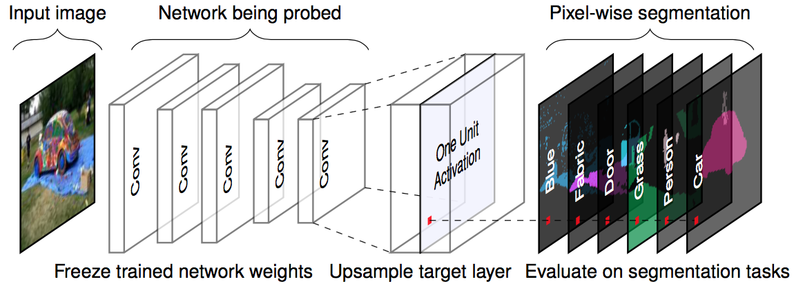
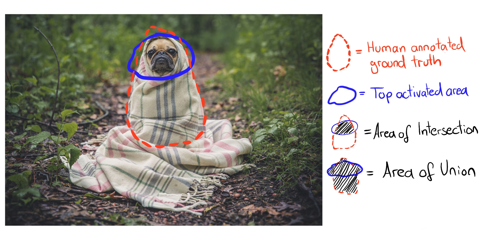

En cours de traduction.
10.1 - Caractéristiques apprises
Les réseaux neuronaux convolutionnels apprennent des caractéristiques et des concepts abstraits à partir de pixels d’images bruts. La visualisation de caractéristiques visualise les caractéristiques apprises par maximisation de l’activation. La dissection de réseau étiquette les unités de réseau neuronal (p. ex. les canaux) avec des concepts humains.
Les réseaux neuronaux profonds apprennent des caractéristiques de haut niveau dans les couches cachées. C’est l’une de leurs plus grandes forces et réduit le besoin d’ingénierie des caractéristiques. Supposons que vous voulez construire un classificateur d’images avec une machine à vecteurs de support. Les matrices de pixels bruts ne constituent pas la meilleure entrée pour entraîner votre SVM, donc vous créez de nouvelles caractéristiques basées sur la couleur, le domaine fréquentiel, les détecteurs de bords, etc. Avec les réseaux neuronaux convolutionnels, l’image est introduite dans le réseau sous sa forme brute (i.e. les pixels). Le réseau transforme l’image à de nombreuses reprises. D’abord, l’image passe par de plusieurs couches convolutionnelles. Dans ces couches convolutionnelles, le réseau y apprend de nouvelles caractéristiques de plus en plus complexes. Ensuite, l’information de l’image transformée passe à travers les couches entièrement connectées et se transforme en une classification ou une prédiction.

- La ou les premières couches convolutionnelles apprennent des caractéristiques telles que les bords et les textures simples.
- Les couches convolutionnelles suivantes apprennent des caractéristiques telles que des textures et des motifs plus complexes.
- Les dernières couches convolutionnelles apprennent des caractéristiques telles que des objets ou des parties d’objets.
- Les couches entièrement connectées apprennent à relier les activations des caractéristiques de haut niveau aux classes individuelles à prédire.
Génial. Mais comment obtenons-nous réellement ces images hallucinatoires ?
10.1.1 - Visualisation des caractéristiques
L’approche consistant à rendre explicites les caractéristiques apprises est appelée visualisation de caractéristiques. La visualisation de caractéristiques pour une unité d’un réseau neuronal se fait en trouvant l’entrée qui maximise l’activation de cette “unité”.
“Unité” fait référence soit à des neurones individuels, des canaux (également appelés cartes de caractéristiques), des couches entières ou à la probabilité de classe finale en classification (ou le neurone pré-softmax correspondant, ce qui est recommandé). Les neurones individuels sont des unités atomiques du réseau, donc nous obtiendrions le plus d’informations en créant des visualisations de caractéristiques pour chaque neurone. Mais il y a un problème : Les réseaux neuronaux contiennent souvent des millions de neurones. Examiner la visualisation de caractéristiques de chaque neurone prendrait trop de temps. Les canaux (parfois appelés cartes d’activation) en tant qu’unités sont un bon choix pour la visualisation de caractéristiques. Nous pouvons aller plus loin et visualiser une couche convolutionnelle entière. Les couches en tant qu’unité sont utilisées pour le DeepDream de Google, qui ajoute de manière répétée les caractéristiques visualisées d’une couche à l’image originale, résultant en une version onirique de l’entrée.

10.1.1.1 Visualisation des caractéristiques par optimisation
En termes mathématiques, la visualisation de caractéristiques est un problème d’optimisation. Nous supposons que les poids du réseau neuronal sont fixes, ce qui signifie que le réseau est entraîné. Nous cherchons une nouvelle image qui maximise l’activation (moyenne) d’une unité, ici un seul neurone :
\[img^*=\arg\max_{img}h_{n,x,y,z}(img)\]
La fonction \(h\) correspond à l’activation du neurone, \(img\) les données d’entrée (une image) du réseau, \(x\) et \(y\) décrive la position spatiale du neurone, \(n\) identifie la couche et \(z\) l’indice du canal.
\[img^*=\arg\max_{img}\sum_{x,y}h_{n,x,y,z}(img)\]
Dans cette formule, tous les neurones dans le canal \(z\) sont pondérés de manière égale. Alternativement, vous pouvez également maximiser des directions aléatoires, ce qui signifie que les neurones seraient multipliés par différents paramètres, y compris des directions négatives. De cette façon, nous étudions comment les neurones interagissent au sein du canal. Au lieu de maximiser l’activation, vous pouvez également la minimiser (ce qui correspond à maximiser la direction négative). De manière intéressante, lorsque vous maximisez la direction négative, vous obtenez des caractéristiques très différentes pour la même unité :

Nous pouvons aborder ce problème d’optimisation de différentes manières. Par exemple, au lieu de générer de nouvelles images, nous pourrions parcourir nos images d’entraînement et sélectionner celles qui maximisent l’activation. C’est une approche valable, mais utiliser des données d’entraînement présente le problème que les éléments sur les images peuvent être corrélés et nous ne pouvons pas voir ce que le réseau neuronal recherche réellement. Si les images qui génèrent une haute activation d’un certain canal montrent un chien et une balle de tennis, nous ne savons pas si le réseau neuronal se concentre sur le chien, la balle de tennis ou peut-être sur les deux.
Une autre approche consiste à générer de nouvelles images, en partant de bruit aléatoire. Pour obtenir des visualisations significatives, il y a généralement des contraintes sur l’image, par exemple que seuls de petits changements sont autorisés. Pour réduire le bruit dans la visualisation des caractéristiques, vous pouvez appliquer du jittering, de la rotation ou du redimensionnement à l’image avant l’étape d’optimisation. D’autres options de régularisation incluent la pénalisation de fréquence (par exemple, réduire la variance des pixels voisins) ou générer des images avec des prioris appris, par exemple avec des réseaux adverses génératifs (GANs)1 ou des autoencodeurs débruitants2.

Si vous désirez approdonfir le sujet de visualisation des caractéristiques, jetez une oeil au journal en ligne distill.pub, particulièrement l’article posté par Olah et al (2017)3, dont j’ai utilisé de nombreuses images. Je recommande également l’article sur la construction de blocs d’interprétation4.
10.1.1.2 Lien avec les exemples adverses
Il existe un lien entre la visualisation de caractéristiques et les exemples adverses : les deux techniques maximisent l’activation d’une unité de réseau neuronal. Pour les exemples adverses, nous recherchons l’activation maximale du neurone pour la classe adverse (= incorrecte). Une différence réside dans l’image avec laquelle nous commençons : pour les exemples adverses, il s’agit de l’image pour laquelle nous voulons générer l’image adverse. Pour la visualisation de caractéristiques, c’est, selon l’approche, du bruit aléatoire.
10.1.1.3 Données textuelles et tabulaires
La littérature se concentre sur la visualisation des caractéristiques pour les réseaux neuronaux convolutionnels destinés à la reconnaissance d’images. Techniquement, rien ne vous empêche de trouver l’entrée qui active au maximum un neurone d’un réseau neuronal entièrement connecté pour des données tabulaires ou d’un réseau neuronal récurrent pour des données textuelles. Vous pourriez ne plus appeler cela “visualisation de caractéristiques”, puisque le “caractéristique” serait une entrée de données tabulaires ou textuelle. Pour la prédiction de défaut de crédit, les entrées pourraient être le nombre de crédits antérieurs, le nombre de contrats mobiles, l’adresse et des dizaines d’autres caractéristiques. La caractéristique apprise d’un neurone serait alors une certaine combinaison des dizaines de caractéristiques. Pour les réseaux neuronaux récurrents, il est un peu plus agréable de visualiser ce que le réseau a appris : Karpathy et al. (2015)5 ont montré que les réseaux neuronaux récurrents ont effectivement des neurones qui apprennent des caractéristiques interprétables. Ils ont entraîné un modèle au niveau des caractères, qui prédit le prochain caractère dans la séquence à partir des caractères précédents. Une fois qu’une parenthèse ouvrante “(” survenait, l’un des neurones était fortement activé, et se désactivait lorsque la parenthèse fermante correspondante “)” survenait. D’autres neurones se déclenchaient à la fin d’une ligne. Certains neurones se déclenchaient dans les URL. La différence avec la visualisation des caractéristiques pour les CNN est que les exemples n’ont pas été trouvés par optimisation, mais en étudiant les activations des neurones dans les données d’entraînement.
Certaines des images semblent montrer des concepts bien connus comme des museaux de chiens ou des bâtiments. Mais comment pouvons-nous en être sûrs ? La méthode de dissection de réseau relie les concepts humains avec des unités individuelles de réseau neuronal. Alerte de divulgâchage : la dissection de réseau nécessite des jeux de données supplémentaires que quelqu’un a étiquetés avec des concepts humains.
10.1.2 Dissection d’un réseau
L’approche de Dissection de Réseau par Bau & Zhou et al. (2017)6 quantifie l’interprétabilité d’une unité d’un réseau neuronal convolutionnel. Elle relie les zones fortement activées des canaux de CNN avec des concepts humains (objets, parties, textures, couleurs, …).
Les canaux d’un réseau neuronal convolutionnel apprennent de nouvelles caractéristiques, comme nous l’avons vu dans le chapitre consacré à la visualisation de caractéristiques. Mais ces visualisations ne prouvent pas qu’une unité a appris un certain concept. Nous n’avons pas non plus de mesure pour évaluer à quel point une unité détecte, par exemple, les gratte-ciels. Avant d’entrer dans les détails de la Dissection de Réseau, nous devons parler de la grande hypothèse qui est derrière cette ligne de recherche. L’hypothèse est la suivante : Les unités d’un réseau neuronal (comme les canaux convolutionnels) apprennent des concepts désenchevêtrés.
La Question des caractéristiques désenchevêtrées
Les réseaux neuronaux (convolutionnels) apprennent-ils des caractéristiques désenchevêtrées ? Les caractéristiques désenchevêtrées signifient que des unités individuelles du réseau détectent des concepts spécifiques du monde réel. Le canal convolutionnel 394 pourrait détecter des gratte-ciels, le canal 121 des museaux de chiens, le canal 12 des rayures à un angle de 30 degrés… L’opposé d’un réseau désenchevêtré est un réseau complètement enchevêtré. Dans un réseau complètement enchevêtré, par exemple, il n’y aurait pas d’unité individuelle pour les museaux de chiens. Tous les canaux contribueraient à la reconnaissance des museaux de chiens.
Les caractéristiques désenchevêtrées impliquent que le réseau est hautement interprétable. Supposons que nous ayons un réseau avec des unités complètement désenchevêtrées qui sont étiquetées avec des concepts connus. Cela ouvrirait la possibilité de suivre le processus de prise de décision du réseau. Par exemple, nous pourrions analyser comment le réseau classe les loups par rapport aux huskies. D’abord, nous identifions l’unité “husky”. Nous pouvons vérifier si cette unité dépend des unités “museau de chien”, “fourrure duveteuse” et “neige” de la couche précédente. Si c’est le cas, nous savons qu’elle classera par erreur une image d’un husky avec un arrière-plan enneigé comme un loup. Dans un réseau désenchevêtré, nous pourrions identifier des corrélations non causales problématiques. Nous pourrions automatiquement lister toutes les unités fortement activées et leurs concepts pour expliquer une prédiction individuelle. Nous pourrions facilement détecter les biais dans le réseau neuronal. Par exemple, le réseau a-t-il appris une caractéristique de “peau blanche” pour prédire un salaire ?
Alerte de divulgâchage : les réseaux neuronaux convolutionnels ne sont pas parfaitement désenchevêtrés. Nous allons maintenant examiner de plus près la Dissection de Réseau pour découvrir à quel point les réseaux neuronaux sont interprétables.
10.1.2.1 - Algorithme de dissection de réseau
La Dissection de Réseau comporte trois étapes :
- Obtenir des images avec des concepts visuels étiquetés par des humains, allant des rayures aux gratte-ciels.
- Mesurer les activations des canaux CNN pour ces images.
- Quantifier l’alignement des activations et des concepts étiquetés.
La figure suivante visualise comment une image est transmise à un canal et associée aux concepts étiquetés.

Étape 1 : Le jeu de données Broden
La première étape difficile mais cruciale est la collecte de données. La dissection de réseau nécessite des images étiquetées pixel par pixel avec des concepts de différents niveaux d’abstraction (des couleurs aux scènes de rue). Bau & Zhou et al. ont combiné plusieurs jeux de données avec des concepts pixel par pixel. Ils ont nommé ce nouveau jeu de données Broden, qui signifie que les données sont largement et densément étiquetées. Le jeu de données Broden est segmenté principalement au niveau du pixel, pour certains jeux de données, toute l’image est étiquetée. Broden contient 60 000 images avec plus de 1 000 concepts visuels à différents niveaux d’abstraction : 468 scènes, 585 objets, 234 parties, 32 matériaux, 47 textures et 11 couleurs.
Étape 2 : Récupération des activations du réseau
Ensuite, nous créons les masques des zones les plus activées par canal et par image. À ce stade, les étiquettes de concept ne sont pas encore impliquées.
- Pour chaque canal convolutionnel \(k\) :
- Pour chaque image \(x\) dans le jeu de données Broden :
- Propager l’image \(x\) vers la couche cible contenant le canal \(k\).
- Extraire les activations de pixels du canal convolutionnel \(k\) : \(A_k(x)\).
- Calculer la distribution des activations de pixels \(\alpha_k\) sur toutes les images.
- Déterminer le niveau du quantile à \(0,995\) de activations \(\alpha_k\). Cela signifie que \(0,5%\) de toutes les activations du canal \(k\) pour l’image \(x\) sont supérieures à \(T_k\).
- Pour chaque image x dans le jeu de données Broden :
- Mettre à l’échelle la carte d’activation (éventuellement) de résolution inférieure \(A_k(x)\) à la résolution de l’image \(x\). Nous appelons le résultat \(S_k(x)\).
- Binariser la carte d’activation : Un pixel est soit activé soit désactivé, selon qu’il dépasse ou non le seuil d’activation \(T_k\). Le nouveau masque est \(M_k(x) = S_k(x) \geq T_k(x)\).
- Pour chaque image \(x\) dans le jeu de données Broden :
Étape 3 : Alignement activation-concept
Après l’étape 2, nous avons un masque d’activation par canal et par image. Ces masques d’activation marquent les zones fortement activées. Pour chaque canal, nous voulons trouver le concept humain qui active ce canal. Nous trouvons le concept en comparant les masques d’activation avec tous les concepts étiquetés. Nous quantifions l’alignement entre le masque d’activation k et le masque de concept c avec le score d’Intersection sur Union (IoU) :
\[IoU_{k,c} = \frac{\sum |M_k(x) \bigcap L_c(x)|}{\sum |M_k(x) \bigcup L_c(x)|}\]
où \(|\cdot|\) est la cardinalité d’un ensemble. L’intersection sur union compare l’alignement entre deux zones. \(IoU_{k,c}\) peut être interprété comme la précision avec laquelle l’unité k détecte le concept \(c\). Nous appelons l’unité \(k\) un détecteur du concept c lorsque \(IoU_{k,c} > 0,04\). Ce seuil a été choisi par Bau & Zhou et al (2017).
La figure suivante illustre l’intersection et l’union du masque d’activation et du masque de concept pour une seule image :


10.1.2.2 - Expériences
Les auteurs de la dissection de réseau ont entraîné différentes architectures de réseaux (AlexNet, VGG, GoogleNet, ResNet) à partir de zéro sur différents jeux de données (ImageNet, Places205, Places365). ImageNet contient 1,6 million d’images de 1000 classes axées sur les objets. Places205 et Places365 contiennent respectivement 2,4 millions / 1,6 million d’images de 205 / 365 scènes différentes. Les auteurs ont également entraîné AlexNet sur des tâches d’apprentissage auto-supervisées telles que la prédiction de l’ordre des images vidéo ou la colorisation des images. Pour bon nombre de ces différents paramètres, ils ont compté le nombre de détecteurs de concepts uniques comme mesure de l’interprétabilité. Voici quelques-unes des découvertes :
- Les réseaux détectent des concepts de niveau inférieur (couleurs, textures) dans les couches inférieures et des concepts de niveau supérieur (parties, objets) dans les couches supérieures. Nous avons déjà vu cela dans les Visualisations de Caractéristiques.
- La normalisation par lots réduit le nombre de détecteurs de concepts uniques.
- De nombreuses unités détectent le même concept. Par exemple, il y a 95 (!) canaux de chien dans VGG entraîné sur ImageNet en utilisant \(IoU \geq 0,04\) comme seuil de détection (4 dans conv4_3, 91 dans conv5_3, voir site web du projet).
- Augmenter le nombre de canaux dans une couche augmente le nombre d’unités interprétables.
- Les initialisations aléatoires (entraînement avec différentes graines aléatoires) entraînent des nombres légèrement différents d’unités interprétables.
- ResNet est l’architecture de réseau avec le plus grand nombre de détecteurs uniques, suivi de VGG, GoogleNet et AlexNet en dernier.
- Le plus grand nombre de détecteurs de concepts uniques est appris pour Places356, suivi de Places205 et ImageNet en dernier.
- Le nombre de détecteurs de concepts uniques augmente avec le nombre d’itérations d’entraînement.
- Les réseaux formés sur des tâches auto-supervisées ont moins de détecteurs uniques par rapport aux réseaux formés sur des tâches supervisées.
- En apprentissage par transfert, le concept d’un canal peut changer. Par exemple, un détecteur de chien est devenu un détecteur de cascade. Cela s’est produit dans un modèle initialement formé pour classifier des objets et ensuite affiné pour classifier des scènes.
- Dans l’une des expériences, les auteurs ont projeté les canaux sur une nouvelle base tournée. Cela a été fait pour le réseau VGG formé sur ImageNet. “Tourné” ne signifie pas que l’image a été tournée. “Tourné” signifie que nous prenons les 256 canaux de la couche conv5 et calculons 256 nouveaux canaux comme combinaisons linéaires des canaux originaux. Dans le processus, les canaux deviennent enchevêtrés. La rotation réduit l’interprétabilité, c’est-à-dire que le nombre de canaux alignés sur un concept diminue. La rotation a été conçue pour maintenir la performance du modèle identique. La première conclusion : l’interprétabilité des CNN est dépendante de l’axe. Cela signifie que des combinaisons aléatoires de canaux sont moins susceptibles de détecter des concepts uniques. La deuxième conclusion : l’interprétabilité est indépendante du pouvoir discriminant. Les canaux peuvent être transformés avec des transformations orthogonales tandis que le pouvoir discriminant reste le même, mais l’interprétabilité diminue.
Les auteurs ont également utilisé la dissection de réseau pour les réseaux adverses génératifs (Generative Adversarial Networks : GANs). Vous pouvez trouver la dissection de réseau pour les GANs sur le site web du projet.
10.1.3 Avantages
Les visualisations de caractéristiques offrent un aperçu unique du fonctionnement des réseaux neuronaux, en particulier pour la reconnaissance d’images. Étant donné la complexité et l’opacité des réseaux neuronaux, la visualisation des caractéristiques est une étape importante dans l’analyse et la description des réseaux neuronaux. Grâce à la visualisation des caractéristiques, nous avons appris que les réseaux neuronaux apprennent d’abord des détecteurs de bords et de textures simples et des détecteurs de parties et d’objets plus abstraits dans les couches supérieures. La dissection de réseau élargit ces perspectives et rend mesurable l’interprétabilité des unités de réseau.
La dissection de réseau nous permet de lier automatiquement des unités à des concepts, ce qui est très pratique.
La visualisation de caractéristiques est un excellent outil pour communiquer de manière non technique le fonctionnement des réseaux neuronaux.
Avec la dissection de réseau, nous pouvons également détecter des concepts au-delà des classes dans la tâche de classification. Mais nous avons besoin de jeux de données contenant des images avec des concepts étiquetés pixel par pixel.
La visualisation des caractéristiques peut être combinée avec des méthodes d’attribution de caractéristiques, qui expliquent quels pixels étaient importants pour la classification. La combinaison des deux méthodes permet d’expliquer une classification individuelle ainsi que la visualisation locale des caractéristiques apprises qui ont été impliquées dans la classification. Voir Les Blocs de Construction de l’Interprétabilité de distill.pub.
Enfin, les visualisations de caractéristiques forment de magnifiques fonds d’écran et impressions sur T-shirt.
10.1.4 Inconvénients
De nombreuses images de visualisation de caractéristiques ne sont pas interprétables du tout, mais contiennent certaines caractéristiques abstraites pour lesquelles nous n’avons ni mots ni concept mental. L’affichage des visualisations de caractéristiques avec des données d’entraînement peut aider. Les images pourraient toujours ne pas révéler ce à quoi le réseau neuronal a réagi et indiquer seulement quelque chose comme “peut-être doit-il y avoir du jaune dans les images”. Même avec la dissection de réseau, certains canaux ne sont pas liés à un concept humain. Par exemple, la couche conv5_3 de VGG formée sur ImageNet a 193 canaux (sur 512) qui n’ont pas pu être associés à un concept humain.
Il y a trop d’unités à examiner, même en “visualisant seulement” les activations de canal. Pour l’architecture Inception V1, par exemple, il y a déjà plus de 5000 canaux issus de neuf couches convolutionnelles. Si vous voulez également montrer les activations négatives plus quelques images des données d’entraînement qui activent maximale ou minimalement le canal (disons quatre images positives, quatre images négatives), alors vous devez déjà afficher plus de 50 000 images. Au moins, nous savons – grâce à la dissection de réseau – que nous n’avons pas besoin d’étudier les directions aléatoires.
Illusion d’interprétabilité ? Les visualisations de caractéristiques peuvent donner l’illusion que nous comprenons ce que fait le réseau neuronal. Mais comprenons-nous vraiment ce qui se passe dans le réseau neuronal ? Même si nous examinons des centaines ou des milliers de visualisations de caractéristiques, nous ne pouvons pas comprendre le réseau neuronal. Les canaux interagissent de manière complexe, les activations positives et négatives ne sont pas liées, plusieurs neurones peuvent apprendre des caractéristiques très similaires et pour beaucoup de ces caractéristiques, nous n’avons pas de concepts humains équivalents. Nous ne devons pas tomber dans le piège de croire que nous comprenons complètement les réseaux neuronaux simplement parce que nous croyons avoir vu que le neurone 349 de la couche 7 est activé par des marguerites. La Dissection de Réseau a montré que des architectures comme ResNet ou Inception ont des unités qui réagissent à certains concepts. Mais l’IoU n’est pas si élevé et souvent de nombreuses unités répondent au même concept et certaines à aucun concept du tout. Les canaux ne sont pas complètement désenchevêtrés et nous ne pouvons pas les interpréter isolément.
Pour la dissection de réseau, vous avez besoin de jeux de données étiquetés au niveau du pixel avec les concepts. Ces jeux de données nécessitent beaucoup d’efforts pour être collectés, car chaque pixel doit être étiqueté, ce qui se fait généralement en dessinant des segments autour des objets sur l’image.
La dissection de réseau n’aligne que les concepts humains avec les activations positives mais pas avec les activations négatives des canaux. Comme l’ont montré les visualisations de caractéristiques, les activations négatives semblent être liées à des concepts. Cela pourrait être corrigé en examinant également le quantile inférieur des activations.
10.1.5 Logiciels et matériel complémentaire
Il existe une implémentation open-source de la visualisation de caractéristiques appelée Lucid. Vous pouvez l’essayer facilement dans votre navigateur en utilisant les liens vers les notebooks fournis sur la page GitHub de Lucid. Aucun logiciel supplémentaire n’est nécessaire. D’autres implémentations incluent tf_cnnvis pour TensorFlow, Keras Filters pour Keras et DeepVis pour Caffe.
La dissection de réseau dispose d’un excellent site web associé à ce projet. En plus de la publication, il héberge du matériel supplémentaire tel que du code, des données et des visualisations de masques d’activation.
Notes de bas de page
Nguyen, Anh, Alexey Dosovitskiy, Jason Yosinski, Thomas Brox, and Jeff Clune. “Synthesizing the preferred inputs for neurons in neural networks via deep generator networks.” Advances in neural information processing systems 29 (2016): 3387-3395.↩︎
Nguyen, Anh, Jeff Clune, Yoshua Bengio, Alexey Dosovitskiy, and Jason Yosinski. “Plug & play generative networks: Conditional iterative generation of images in latent space.” In Proceedings of the IEEE Conference on Computer Vision and Pattern Recognition, pp. 4467-4477. 2017.↩︎
Olah, Chris, Alexander Mordvintsev, and Ludwig Schubert. “Feature visualization.” Distill 2, no. 11 (2017): e7.↩︎
Olah, Chris, Arvind Satyanarayan, Ian Johnson, Shan Carter, Ludwig Schubert, Katherine Ye, and Alexander Mordvintsev. “The building blocks of interpretability.” Distill 3, no. 3 (2018): e10.↩︎
Karpathy, Andrej, Justin Johnson, and Li Fei-Fei. “Visualizing and understanding recurrent networks.” arXiv preprint arXiv:1506.02078 (2015).↩︎
Bau, David, Bolei Zhou, Aditya Khosla, Aude Oliva, and Antonio Torralba. “Network dissection: Quantifying interpretability of deep visual representations.” In Proceedings of the IEEE conference on computer vision and pattern recognition, pp. 6541-6549 (2017).↩︎